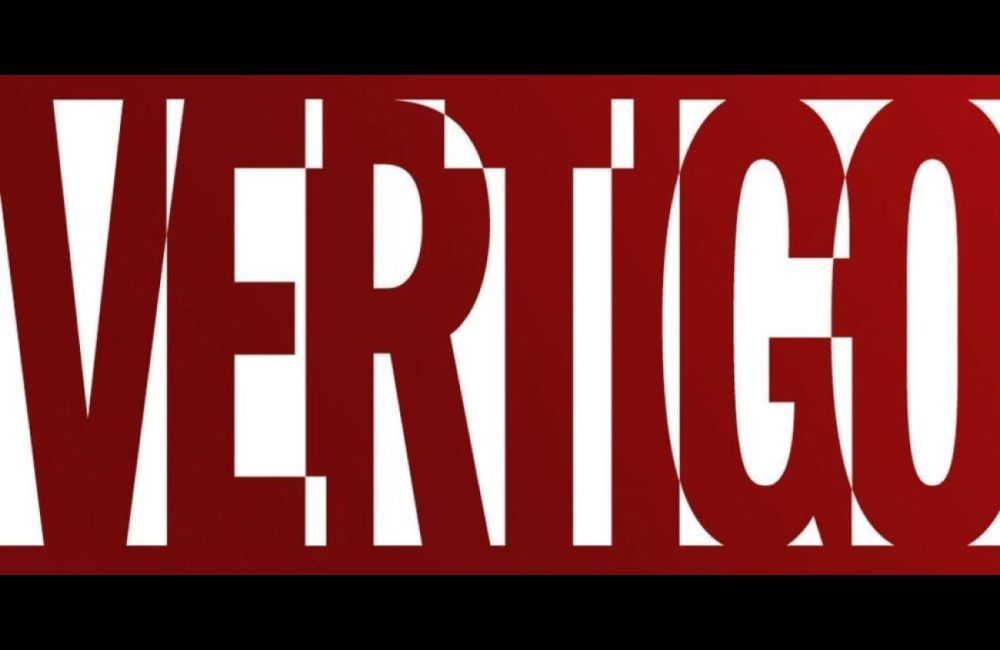

Vertigo Comics

DC Vertigo (also known as Vertigo Comics) is an imprint of the American comic book publisher DC Comics. It was created in 1993 to publish stories with more graphic or adult content that could not fit within the restrictions of the Comics Code Authority, thus allowing more creative freedom than DC's main imprint.
These comics were free to contain explicit violence, substance and drug abuse, sexuality, nudity, profanity, and other controversial subjects, similar to the content of R-rated films. Following a series of editorial restructurings in the 2010s, DC announced in June 2019 that the imprint would be discontinued in January 2020.
Although its initial publications were primarily in the horror and fantasy genres, it also published works dealing with crime, social commentary, speculative fiction, biography, and other genres. Originally publishing a mix of company- and creator-owned work, its focus in later years was on the latter. It pioneered in North America an increasingly common publishing model, in which monthly series are periodically comprised into collected editions which are kept in print for bookstore sale.
Vertigo series won the comics industry's Eisner Award, including the "best continuing series" of various years (The Sandman, Preacher, 100 Bullets, Y: The Last Man and Fables). Several of its publications were adapted to film (such as Constantine, A History of Violence, Stardust, and V for Vendetta) and episodic television (such as Constantine, iZombie, Lucifer, and Preacher).
Titles
99 Days (2011)
100% (2002)
100 Bullets (1999)
100 Bullets: Brother Lono (2013)
2020 Visions (1997)
A.D.D. Adolescent Demo Division (2012)
Aaron and Ahmed (2011)
Absolute Death (1995)
Absolute Peacher (2016)
Absolute Sandman (2006)
Absolute Vertigo (1995)
Accelerate (2000)
Adventures in the Rifle Brigade (2000)
Adventures in the Rifle Brigade: Operation: Bollock (2001)
Air (2008)
Alcoholic (2008)
American Carnage (2018)
American Century (2001)
American Freak: A Tale of the Un-Men (1994)
American Splendor (2006)
American Vampire (2010)
American Vampire Anthology (2013)
American Vampire: The Long Road To Hell (2013)
American Vampire: Lord of Nightmares (2012)
American Vampire: Second Cycle (2014)
American Vampire: Survival of the Fittest (2011)
American Virgin (2006)
American Way: Those Above and Those Below (2017)
Angel and the Ape (2001)
Angeltown (2005)
Animal Man (1993)
Area 10 (2010)
Arcana: The Books of Magic Annual (1994)
Army@Love (2007)
Army@Love: The Art of War (2008)
Art Ops (2015)
Astro City (2013)
Bang Tango (2009)
Barnum!: In Secret Service to the USA 2003
Battleaxes (2000)
Beware the Creeper (2003)
Bigg Time: A Farcical Fable of Fleeting Time (2002)
Bite Club (2004)
Bite Club: Vampire Crime Unit (2006)
Black Orchid (1993)
Blood & Water #1–5 May 2003 – Sep. 2003
Blood and Shadows #1–4 1996
Blood: A Tale #1–4 Nov. 1996 – Feb. 1997
Bodies #1–8 Sep. 2014 – Apr. 2015
Books of Faerie #1–3 Mar. 1997 – May 1997
Books of Faerie: Auberon's Tale #1–3 Aug. 1998 – Oct. 1998
Books of Faerie: Molly's Story #1–4 Sep. 1999 – Dec. 1999
Books of Magic #1–75 May 1994 – Aug. 2000
Books of Magick: Life During Wartime #1–15 Sep. 2004 – Dec. 2005
Border Town #1–4 Sep. 2018 – Dec. 2018
Brave Old World #1–4 Feb. 2000 – May 2000
Breathtaker #1–4 Jul. 1990 – Oct. 1990
Bronx Kill Graphic novel Mar. 2010
Cairo Graphic novel Nov. 2007
Can't Get No Graphic novel Jun. 2006
Chiaroscuro: The Private Lives of Leonardo da Vinci #1–10 Jul. 1995 – Apr. 1996
Children's Crusade #1–2 Dec. 1993 – Jan. 1994
Chill 2010
Cinderella: Fables are Forever #1–6 Apr. 2011 – Sep. 2011
Cinderella: From Fabletown with Love #1–6 Jan. 2010 – Jun. 2010
Clean Room #1–18 Dec. 2015 – Jun. 2017
Codename: Knockout #0–23 Jun. 2001 – Jun. 2003
Coffin Hill #1–20 Dec. 2013 − Sep. 2015
Congo Bill #1–4 Oct. 1999 – Jan. 2000
Constantine: The Official Movie Adaptation Jan. 2005
Cowboy Wally Show Graphic novel 2003
Cowboys Graphic novel 2011
Crossing Midnight #1–19 Jan. 2007 – Jul. 2008
Cruel and Unusual #1–4 Jun. 1999 – Sep. 1999
Crusades Apr. 2001 – 2002
Cuba: My Revolution Graphic novel Sep. 2010
Dark Entries Graphic novel Aug. 2009
Dark Night: A True Batman Story Graphic novel Jun. 2016
Dark Rain: A New Orleans Story Graphic novel 2010
Daytripper #1–10 Feb. 2010 – Nov. 2010
Dead Boy Detectives Graphic novel 2005 #1–12 Feb. 2014 – Feb. 2015
Deadenders #1–16 Mar. 2000 – Jun. 2001
Deadman #1–13 Oct. 2006 – Oct. 2007
Death Talks About Life 1994
Death: At Death's Door 2003
Death: The High Cost of Living #1–3 Mar. 1993 – May 1993
Death: The Time of Your Life #1–3 Apr. 1996 – Jun. 1996
Deathbed #1–5 Apr. 2018 – Aug. 2018
Delirium's Party: A Little Endless Storybook Graphic novel 2011
Demo: Volume 1 #1–12 Nov. 2003 – Nov. 2004
Demo: Volume 2 #1–6 Apr. 2010 – Sep. 2010
Destiny: A Chronicle of Deaths Foretold #1–3 Nov. 1997 – Jan. 1998
Dhampire: Stillborn Graphic novel Sep. 1996
Django Unchained #1–7 Feb. 2013 – Oct. 2013
DMZ #1–72 Jan. 2006 – Feb. 2012
Dog Moon Graphic novel 1996
Dominique Laveau: Voodoo Child #1–7 May 2012 – Nov. 2012
Doom Patrol #64–87 Mar. 1993 – Feb. 1995
Dreaming #1–60 1996 – 2018
Eaters #1 1995
Effigy #1–7 Mar. 2015 – Sep. 2015
Egypt #1–7 Aug. 1995 – Feb. 1996
El Diablo #1–4 Mar. 2001 – Jun. 2001
Endless Gallery #1 1995
Enigma #1–8 Mar. 1993 – Oct. 1993
Essential Vertigo: Swamp Thing #1–24 Nov. 1996 – Oct. 1998
Essential Vertigo: The Sandman #1–32 Aug. 1996 – Mar. 1999
Everafter: From the Pages of Fables #1–12 Nov. 2016 – Oct. 2017
Executor Graphic novel 2010
Exterminators #1–30 Mar. 2006 – Aug. 2008
Extremist #1–4 Sep. 1993 – Dec. 1993
Fables #1–150 Jul. 2002 – Jul. 2015
Fables: 1001 Nights of Snowfall Graphic novel 2006
Fables: The Last Castle 2003
Fables: Werewolves of the Heartland Graphic novel Nov. 2012
Fables: The Wolf Among Us #1–16 Mar. 2015 – Jun. 2016
Face #1 Jan. 1995
Fairest #1–33 May 2012 – Mar. 2015
Fairest In All the Land Graphic novel Nov. 2013
Faith #1–5 Nov. 1999 – Mar. 2000
Faker #1–6 Sep. 2007 – Feb. 2008
Farewell Moonshadow #1 Jan. 1997
Faultlines #1–6 May 1997 – Oct. 1997
FBP: Federal Bureau of Physics #1–24 Sep. 2013 – Nov. 2015
Fight for Tomorrow #1–6 Nov. 2002 – Apr. 2003
Filth #1–13 Aug. 2002 – Oct. 2003
Filthy Rich Graphic novel Aug. 2009
Finals #1–4 Sep. 1999 – Dec. 1999
Flex Mentallo #1–4 Jun. 1996 – Sep. 1996
Flinch #1–16 Jun. 1999 – Jan. 2001
Fogtown Graphic novel 2010
Fountain Graphic novel 2005
Four Horsemen #1–4 Feb. 2000 – May 2000
Frostbite #1–6 Nov. 2016 – Apr. 2017
Gangland #1–4 Jun. 1998 – Sep. 1998
Get Jiro! Graphic novel Jun. 2012
Get Jiro: Blood and Sushi Graphic novel Oct. 2015
Ghostdancing #1–6 Mar. 1995 – Sep. 1995
Ghosts Dec. 2012
Gifts of the Night #1–4 Feb. 1999 – May 1999
Girl #1–3 Jul. 1996 – Sep. 1996
Girl Who Would Be Death #1–4 Dec. 1998 – Mar. 1999
Girl who Kicked the Hornets' Nest Graphic novel Jul. 2015
Girl who Played with Fire Graphic novel May 2014
Girl with the Dragon Tattoo #1-2 Apr. 2012 – 2013
God Save the Queen Graphic novel Apr. 2007
Goddess #1–8 Jun. 1995 – Jan. 1996
Goddess Mode #1–6 Dec. 2018 – Jun. 2019
Gone to Amerikay Graphic novel Mar. 2012
Greatest Hits #1–6 Nov. 2008 – Apr. 2009
Greek Street #1–16 Sep. 2009 – Dec. 2010
Greendale Graphic novel Jun. 2010
Green Woman Graphic novel 2010
Grip: The Strange World of Men #1–5 Jan. 2002 – May 2002
Happydale: Devils in the Desert #1–2 1999
Haunted Tank #1–5 Feb. 2009 – Jun. 2009
Heart of the Beast Graphic novel 1994
Heartland Mar. 1997
Heartthrobs #1–4 Jan. 1999 – April 1999
Heavy Liquid #1–5 Oct. 1999 – Feb. 2000
Hell Eternal Graphic novel Apr. 1998
Hellblazer #63–300 Mar. 1993 – Apr. 2013
Hellblazer: All His Engines Graphic novel Jan. 2005
Hellblazer: City of Demons #1–5 Dec. 2010 – Feb. 2011
Hellblazer: Pandemonium Graphic novel Feb. 2010
Hellblazer Presents: Chas – The Knowledge #1–5 Sep. 2008 – Jan. 2009
Hellblazer Special: Bad Blood #1–4 Sep. 2000 – Dec. 2000
Hellblazer Special: Lady Constantine #1–4 Feb. 2003 – May 2003
Hellblazer Special: Papa Midnite #1–3 Apr. 2005 – Aug. 2005
Hellblazer/The Books of Magic #1–2 Dec. 1997 – Jan. 1998
Hex Wives #1–6 Dec. 2018 – May 2019
High Level #1–6 Apr. 2019 – Nov. 2019
Hinterkind #1–18 Dec. 2013 – Jul. 2015
Horrorist #1–2 Dec. 1995 – Jan. 1996
House of Mystery #1–42 Jul. 2008 – Dec. 2011
House of Secrets #1–25 Oct. 1996 – Dec. 1998
House of Secrets: Façade #1–2 May 2001 – Jun. 2001
House of Whispers #1– Nov. 2018 – ongoing
House on the Borderland Graphic novel 2000
How to Understand Israel in 60 Days of Less Graphic novel 2010
Human Target #1–4 Apr. 1999 – Jul. 1999 #1–21 Oct. 2003 – Jun. 2005
Human Target: Final Cut Graphic novel 2002
Hunter: The Age of Magic #1–25 Sep. 2001 – Sep. 2003
I Die At Midnight Graphic novel 2000
I, Paparazzi Graphic novel Sep. 2001
Imaginary Fiends #1–6 Jan. 2018 – Jun. 2018
In the Shadow of Edgar Allan Poe Graphic novel 2003
Incognegro Graphic novel Feb. 2008
Industrial Gothic #1–5 Dec. 1995 – Apr. 1996
Invisibles #1–25 1994 – 2000
It's a Bird... Graphic novel Apr. 2004
iZOMBIE #1–28 Jul. 2010 – Oct. 2012
Jack of Fables #1–50 Sep. 2006 – Apr. 2011
Joe the Barbarian #1–8 Mar. 2010 – May 2011
Jonah Hex: Riders of the Worm and Such #1–5 Mar. 1995 – Jul. 1995
Jonah Hex: Shadows West #1–3 Feb. 1999 – Apr. 1999
Jonah Hex: Two-Gun Mojo #1–5 Aug. 1993 – Dec. 1993
Jonny Double #1–4 Sep. 1998 – Dec. 1998
Junk Culture #1–2 Jul. 1997 – Aug. 1997
Kid Eternity #1–16 May 1993 – Sep. 1994
Kill Your Boyfriend (1995)
King David Graphic novel May 2002
Last Gang in Town #1–6 Feb. 2016 – Aug. 2016
Last One #1–6 Jul. 1993 – Dec. 1993
Literals #1–3 Jun. 2009 – Aug. 2009
Little Endless Storybook Aug. 2001
Losers #1–32 Aug. 2003 – Mar. 2006
Lost Boys #1–6 Oct. 2016 – May 2017
Lovecraft Graphic novel 2004
Loveless #1–24 Dec. 2005 – Jun. 2008
Lucifer #1–75 Jun. 2000 – Aug. 2006
Lucifer: Nirvana 2002
Luna Park Graphic novel 2009
Mad Max: Fury Road – Furiosa #1 Aug. 2015
Mad Max: Fury Road – Mad Max #1–2 Sep. 2015 – Oct. 2015
Mad Max: Fury Road – Nux & Immortan Joe #1 Jul. 2015
Madame Xanadu #1–29 Aug. 2008 – Jan. 2011
Marzi: A Memoir Graphic novel Oct. 2011
Menz Insana Graphic novel 1997
Mercy Graphic novel 1993
Midnight, Mass. #1–8 Jun. 2002 – Jan. 2003
Midnight, Mass: Here There Be Monsters #1–6 Mar. 2004 – Aug. 2004
Millenium Edition Hellblazer Jul. 2000
Millennium Fever #1–4 Oct. 1995 – Jan. 1996
Minx #1–8 Oct. 1998 – May 1999
Mnemovore #1–6 Jun. 2005 – Nov. 2005
Mobfire #1–6 Dec. 1994 – May 1995
Moonshadow #1–12 Sep. 1994 – Aug. 1995
Motherlands #1–6 Mar. 2018 – Aug. 2018
Muktuk Wolfsbreath: Hard-Boiled Shaman #1–3 Aug. 1998 – Oct. 1998
My Faith in Frankie #1–4 Mar. 2004 – Jun. 2004
Mystery in Space Jul. 2012
Mystery Play Graphic novel Jan. 1994
Mythos: The Final Tour #1–3 Dec. 1996 – Feb. 1997
Names of Magic #1–5 Feb. 2001 – Jun. 2001
Neil Gaiman and Charles Vess' Stardust #1–4 Dec. 1997 – Mar. 1998
Neil Gaiman's Midnight Days Graphic novel 1999
Neil Gaiman's Neverwhere #1–9 Aug. 2005 – Sep. 2006
Nevada #1–6 May 1998 – Oct. 1998
New Deadwardians #1–8 May 2012 – Dec. 2012
New Romancer #1–6 Feb. 2016 – Jul. 2016
New York Five #1–4 Mar. 2011 – Jun. 2011
Nobody Graphic novel Jul. 2009
Noche Roja Graphic novel 2011
Northlanders #1–50 Feb. 2008 – Jun. 2012
Orbiter Graphic novel 2003
Originals Graphic novel Nov. 2004
Other Lives Graphic novel 2010
Other Side #1–5 Dec. 2006 – Apr. 2007
Otherworld #1–7 May 2005 – Nov. 2005
Outlaw Nation #1–19 Nov. 2000 – May 2002
Peter & Max: A Fables Novel Graphic novel
Preacher #1–66 Apr. 1995 – Oct. 2000
Preacher Special: Cassidy – Blood & Whiskey Feb. 1998
Preacher Special: One Man's War Mar. 1998
Preacher Special: Saint of Killers #1–4 Aug. 1996 – Nov. 1996
Preacher Special: Tall in the Saddle Feb. 2000
Preacher Special: The Good Old Boys Aug. 1997
Preacher Special: The Story of You-Know-Who Dec. 1996
Pride & Joy #1–4 Jul. 1997 – Oct. 1997
Pride of Baghdad Graphic novel Sep. 2006
Prince of Cats Graphic novel Sep. 2012
Proposition Player #1–6 Dec. 1999 – May 2000
Pulp Fantastic #1–3 Feb. 2000 – Apr. 2000
Punk Rock Jesus #1–6 Sep. 2012 − Feb. 2013
Quitter Graphic novel 2005
Rat Catcher Graphic novel 2010
Red Thorn #1–13 Jan. 2016 – Feb. 2017
Return to Perdition Graphic novel Nov. 2011
Revolver Graphic novel Jul. 2010
Right State Graphic novel Aug. 2012
S.C.I. Spy #1–6 Apr. 2002 – Sep. 2002
Sandman #47–75 Mar. 1993 – Mar. 1996
Sandman: A Gallery of Dreams #1 1994
Sandman: Endless Nights Graphic novel 2003
Sandman Midnight Theatre Graphic novel Sep. 1995
Sandman Mystery Theatre #1–70 Apr. 1993 – Feb. 1999
Sandman Mystery Theatre: Sleep of Reason #1–5 Feb. 2007 – Jun. 2007
Sandman: Overture #1–6 Dec. 2013 − Nov. 2015
Sandman Presents: Bast #1–3 Mar. 2003 – May 2003
Sandman Presents: The Corinthian #1–3 Dec. 2001 – Feb. 2002
Sandman Presents: The Dead Boy Detectives #1–4 Aug. 2001 – Nov. 2001
Sandman Presents: Everything You Always Wanted to Know About Dreams... But Were Afraid to Ask Jul. 2001
Sandman Presents: Love Street #1–3 Jul. 1999 – Sep. 1999
Sandman Presents: Lucifer: The Morningstar Option #1–3 Mar. 1999 – May 1999
Sandman Presents: Merv Pumpkinhead, Agent of Dream #1 2000
Sandman Presents: Petrefax #1–4 Mar. 2000 – Jun. 2000
Sandman Presents: The Furies Graphic novel 2002
Sandman Presents: The Thessaliad #1–4 Mar. 2002 – Jun. 2002
Sandman Presents: Thessaly – Witch for Hire #1–4 Apr. 2004 – Jul. 2004
Sandman: The Dream Hunters Graphic novel 1999
Sandman: The Dream Hunters #1–4 Jan. 2009 – Apr. 2009
Saucer Country #1–14 May 2012 – Jun. 2013
Scalped #1–60 Mar. 2007 – Oct. 2012
Scarab #1–8 Nov. 1993 – Jun. 1994
Scene of the Crime #1–4 May 1999 – Aug. 1999
Seaguy #1–3 Jul. 2004 – Sep. 2004
Seaguy: Slaves of Mickey Eye #1–3 Jun. 2009 − Aug. 2009
Sebastian O #1–3 May 1993 – Jul. 1993
Seekers into the Mystery #1–15 Jan. 1996 – Apr. 1997
Sentences: The Life of MF Grimm Graphic novel Sep. 2007
Seven Miles a Second Graphic novel May 1996
Sgt. Rock: Between Hell & a Hard Place Graphic novel 2003
Shade, the Changing Man #33–70 Mar. 1993 – Apr. 1996
Shadows Fall #1–6 Nov. 1994 – Apr. 1995
Sheriff of Babylon #1–12 Feb. 2016 − Jan. 2017
Shooters Graphic novel Apr. 2012
Silverfish Graphic novel 2008
Skin Graft: The Adventures of a Tattooed Man #1–4 Jul. 1993 – Oct. 1993
Sleepy Hollow Graphic novel Jan. 2000
Sloth Graphic novel Jul. 2006
Spaceman #1–9 Dec. 2011 – Oct. 2012
Strange Adventures #1–4 Nov. 1999 – Feb. 2000 #1 Jul. 2011
Suiciders #1–6 Apr. 2015 – Nov. 2015
Suiciders Kings of HelL.A. #1–6 May 2016 – Dec. 2016
Swamp Thing #129–171 Mar. 1993 – Oct. 2006
Swamp Thing: Roots Graphic novel 1998
Sweet Tooth #1–40 Nov. 2009 – Feb. 2013
System #1–3 May 1996 – Jul. 1996
Tainted Feb. 1995
Tank Girl: Apocalypse #1–4 Nov. 1995 – Feb. 1996
Tank Girl: The Movie Adaption #1 1995
Tank Girl: The Odyssey #1–4 Jun. 1995 – Oct. 1995
Tattered Banners #1–4 Nov. 1998 – Feb. 1999
Tell Me, Dark Graphic novel 1998
Terminal City #1–9 Jul. 1996 – Mar. 1997
Terminal City: Aerial Graffiti #1–5 Nov. 1997 – Mar. 1998
Testament #1–22 Feb. 2006 – Mar. 2008
Time Warp May 2013
Tokyo Days, Bangkok Nights Graphic novel Jan. 2009
Tom Strong and the Planet of Peril #1–6 Sep. 2013 − Feb. 2014
Totems Feb. 2000
Toxic Gumbo Graphic novel May 1998
Tragical Comedy or Comical Tragedy of Mr. Punch Graphic novel 1994
Transmetropolitan #13–60 Sep. 1998 – Nov. 2002
Trenchcoat Brigade #1–4 Mar. 1999 – Jun. 1999
Trigger #1–8 Feb. 2005 – Sep. 2005
Trillium #1–8 Oct. 2013 − Jun. 2014
True Faith Graphic novel 1997
Un-Men #1–13 Oct. 2007 – Oct. 2008
Uncle Sam #1–2 1997
Undercover Genie Graphic novel 2003
The Unexpected Dec. 2011
Unknown Soldier #1–4 Apr. 1997 – Jul. 1997 #1–25 Dec. 2008 – Dec. 2010
Unseen Hand #1–4 Sep. 1996 – Dec. 1996
Unwritten #1–54 Jul. 2009 – Dec. 2013
Unwritten: Apocalypse #1–12 Mar. 2014 – Mar. 2015
Unwritten: Tommy Taylor and the Ship That Sank Twice Graphic novel Sep. 2013
User #1–3 Mar. 2001 – May 2001
Vamps #1–6 Aug. 1994 – Jan. 1995
Vamps: Hollywood and Vein #1–6 Feb. 1996 – Jul. 1996
Vamps: Pumpkin Time #1–3 Dec. 1998 – Feb. 1999
Veils Graphic novel Dec. 1999
Vertical Graphic novel Oct. 2003
Vertigo Jam Aug. 1993
Vertigo Pop! #1–4 Sep. 2002 – Dec. 2003
Vertigo Preview Jan. 1993
Vertigo Rave Fall 1994
Vertigo Resurrected Dec. 2010
Vertigo Secret Files & Origins: Swamp Thing Nov. 2000
Vertigo Secret Files: Hellblazer Aug. 2000
Vertigo Visions Jun. 1993
Vertigo: Winter's Edge #1–3 1998 – 2000
Vertigo X Anniversary Preview Apr. 2003
Vimanarama #1–3 Apr. 2005 – Jun. 2005
Vinyl Underground #1–12 Dec. 2007 – Nov. 2008
Wake #1–10 Jul. 2013 − Sep. 2014
War Story Dec. 2001
We3 #1–3 Oct. 2004 – Mar. 2005
Weird War Tales #1–4 Jun. 1997 – Sep. 1997
Weird Western Tales #1–4 Apr. 2001 – Jul. 2001
Welcome Back to the House of Mystery Jul. 1998
Why I Hate Saturn Graphic novel 1990
Witchcraft #1–3 Jun. 1994 – Aug. 1994
Witchcraft: La Terreur #1–3 Apr. 1998 – Jun. 1998
Witching #1–10 Aug. 2004 – May 2005
Witching Hour #1–3 Jan. 2000 – Mar. 2000
Y: The Last Man #1–60 Sep. 2002 – Mar. 2008
Yossel Graphic novel May 2011
You Are Here Graphic novel Nov. 1998
Young Liars #1–18 May 2008 – Oct. 2009
Zatanna: Everyday Magic Graphic novel 2003


{kind=link}
{kind=link}
{kind=link}
{kind=link}
{kind=link}
{kind=link}
{kind=link}